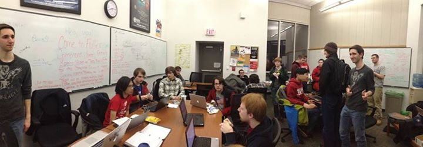
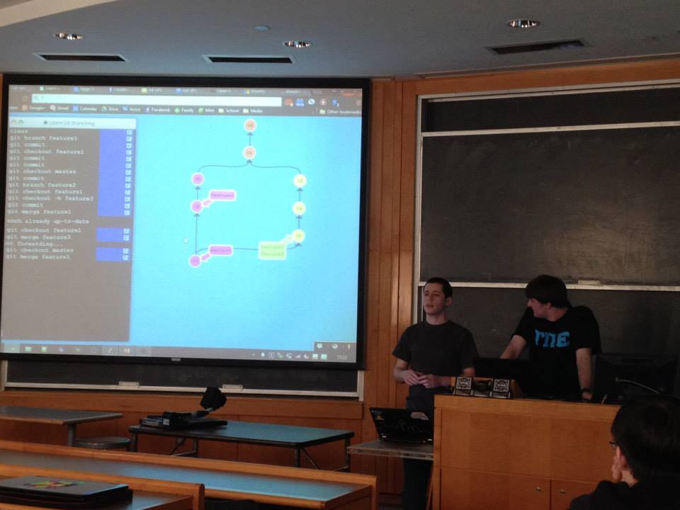
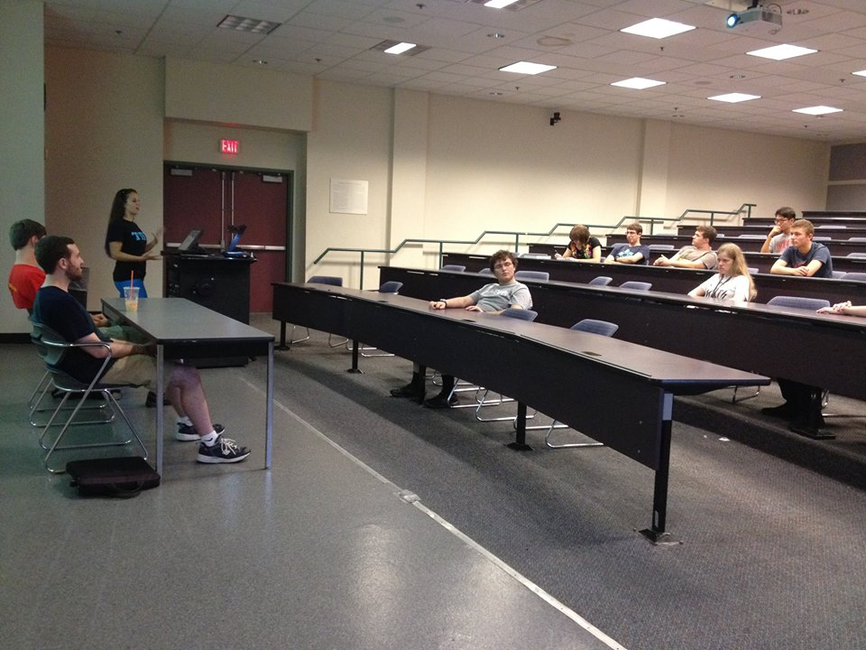
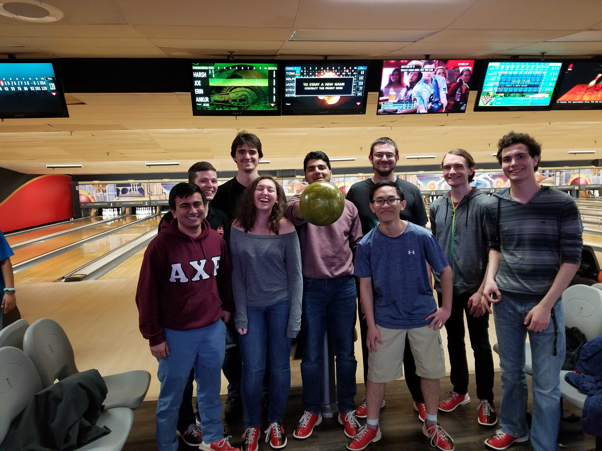

Burning the Midnight Oil
At the end of the term we hold help sessions for extra study or project assitance. The sessions will usually be in the CS Commons located in the 2nd floor of Fuller. During these sessions snacks and drinks are provided to help students on a more than academic level.
Introduction to Git
Periodically throughout the year we hold these lectures to help expose and educate students on how to properly use git so that they can use it in their later classes.
Mock Coding Interviews
Twice a year, around the time that the career fair is occuring, we hold mock coding interviews to help prepare students to land that job or internship.
Internal Socials
We have several socials throughout the year for our members, such as bowling!